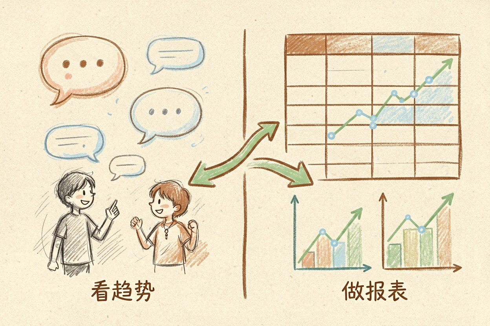
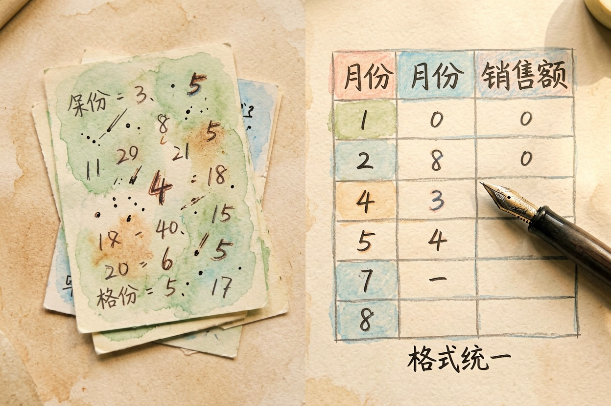
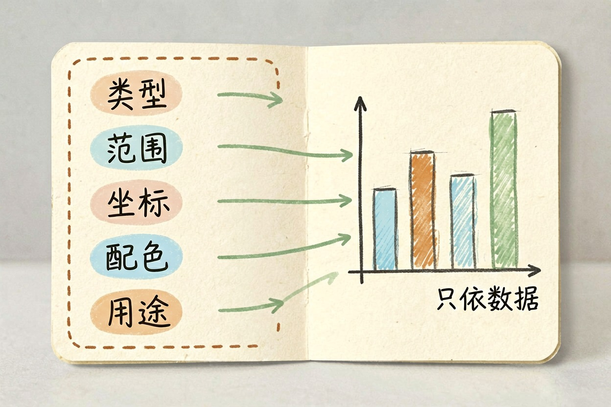
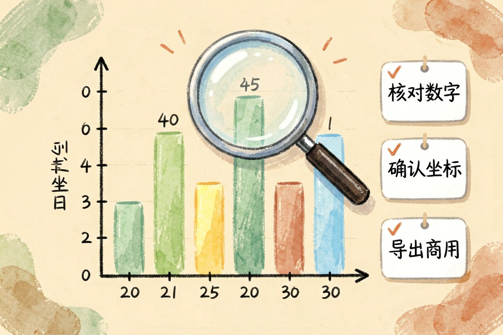
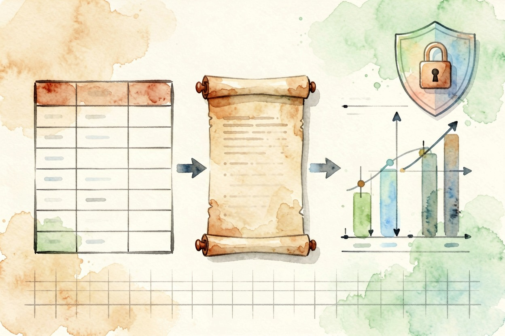

用 AI 生成图表：把数据变成图
想让 AI 画图，先给它能读懂的表格，再告诉它要什么图。顺序对了，图才能直接拿去用。
用 AI 生成图表，先确认它拿到的是「原始数据」还是「你总结好的要点」——这决定图表能不能直接用。正确顺序：整理数据 → 指定图表类型 → 写清坐标和用途 → 核验数字。
用 AI 生成图表前，先选对路线

先分清两条路线。对话 AI（ChatGPT、豆包这类）最灵活，你说需求它就能出图，适合快速看趋势、想思路。表格工具内置 AI（Excel、WPS 里的 AI 功能）能直接改原表，图表和数字联动，改一个数图就更新，适合做正式报表。
日常随手画选对话 AI，正式交付选表格工具。想系统学表格处理，看用 AI 处理 Excel。
选对路线，比会写提示词更重要。同一份数据，对话 AI 出的图适合看趋势，表格 AI 出的图适合改细节。
第一步：把数据整理成 AI 能看懂的样子

AI 不擅长读截图和零散笔记。先把它整理成行列清晰的表格：表头写清楚「月份」「销售额」，单位写进列名或单独标注。缺的列补上，要画折线图就一定要有时间列。整理这一步虽然麻烦，却是整张图的地基，偷懒不得。
数据越规整，AI 选图越准。整理完还可以让 AI 先复核一遍，别把错的数送进图里。
第一步的核心，是把数据整理成表格。格式统一、单位清楚，AI 才分得清横轴和纵轴。
第二步：用提示词指定图表类型和信息重点

提示词有五要素：图表类型、数据范围、X/Y 轴含义、颜色标注、用途。缺一个，AI 就自己猜，一猜就容易偏。
提示词写得越具体，图越接近你想要的样子。想改样式，就在提示词里直接说颜色和字号。下面这段可以直接抄：
我有 2026 年 1-6 月的销售数据，格式如下：
月份,销售额(万元)
1月,12
2月,15
3月,13
4月,18
5月,20
6月,24
请生成柱状图：X 轴为月份，Y 轴为销售额，
每根柱子标注具体数值，标题写「上半年销售趋势」，
用于月度经营汇报。只依据我提供的数据，不要改动数字。第三步：生成后检查三件事

AI 生成图表后，别急着用。一查数字对不对：AI 有时会悄悄改数，拿原表抽查几个关键点。二查图例和坐标：轴标签、单位有没有标反。三查能不能导出商用：多数对话 AI 出的图只适合做示意图，正式汇报请用 Excel/WPS 官方功能导出，具体以微软 Excel 官方支持{:target="_blank"}和 WPS AI 官网{:target="_blank"}当前说明为准。
最怕的，是数字被悄悄改掉。核验这步省不得，尤其要上交的图。
什么数据别画：涉密内容不上传
涉密和未发布的数据别传在线工具。财报、内部成本、还没公开的产品数据，一旦进了第三方服务器，泄露风险你控制不了。AI 出的图当示意图可以，正式场合要人工复核。
图不是画得越花越好，一眼能看懂才重要。想了解图表怎么进汇报，看AI 生成 PPT 工具对比和用 AI 做 PPT 怎么做。
反向提醒：别把涉密数据传在线工具，也别直接拿 AI 的图发正式汇报。数据自己把好关，图才敢放心用。用 AI 生成图表，先整理、再指定、后核验，三步走完再上会。更多工具去AI 工具导航。

本文信息核对于 2026-08-06。AI 产品的价格、免费额度与功能变动频繁，实际以各工具官网当前说明为准。